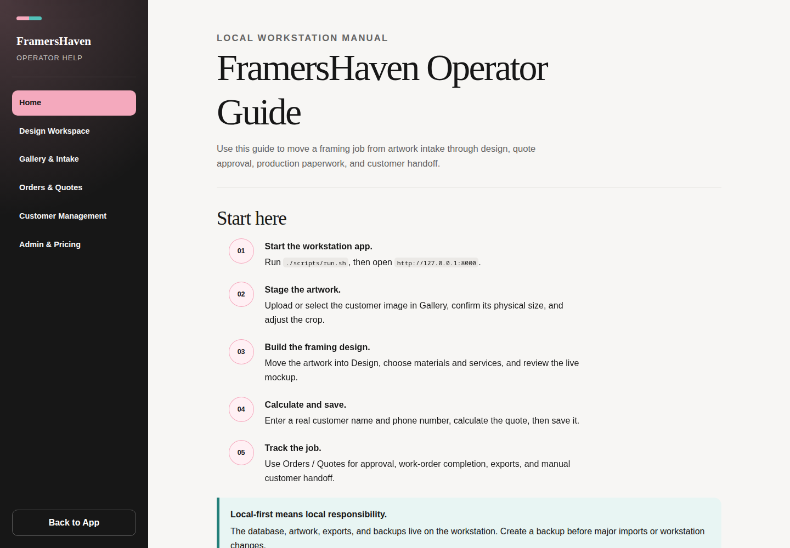

Local workstation manual
FramersHaven Operator Guide
Use this guide to move a framing job from artwork intake through design, quote approval, production paperwork, and customer handoff.
Start here
- Start the workstation app. Run
./scripts/run.sh, then openhttp://127.0.0.1:8000. - Stage the artwork. Upload or select the customer image in Gallery, confirm its physical size, and adjust the crop.
- Build the framing design. Move the artwork into Design, choose materials and services, and review the live mockup.
- Calculate and save. Enter a real customer name and phone number, calculate the quote, then save it.
- Track the job. Use Orders / Quotes for approval, work-order completion, exports, and manual customer handoff.
The database, artwork, exports, and backups live on the workstation. Create a backup before major imports or workstation changes.
Choose a workspace
Design Workspace
Choose materials, tune openings, calculate pricing, and save a quote.
Gallery & Intake
Upload artwork, record its size, adjust crop metadata, and send it to Design.
Orders & Quotes
Filter jobs, advance approved work, preview files, and prepare handoff text.
Customer Management
Search customer records, update contact details, and review prior orders.
Admin & Pricing
Import materials, maintain pricing rules and service rows, and create backups.
Theme selector
The top bar theme selector changes appearance only. It does not change quote data or pricing.
The normal job path
A quote becomes a work order only after customer approval. A work order becomes an invoice only after the operator marks the build complete.

Important limits
- Email and SMS are manual. The app prepares editable text but does not send messages or attach files.
- Payments and accounting remain outside the app.
- The standard operator flow supports single openings and the current multi-opening tools; advanced freeform mat design remains limited.
- Materials and services are separate. Moulding, mat, and glazing come from catalog data; backing, mounting, printing, assembly, and similar work come from Admin service pricing.